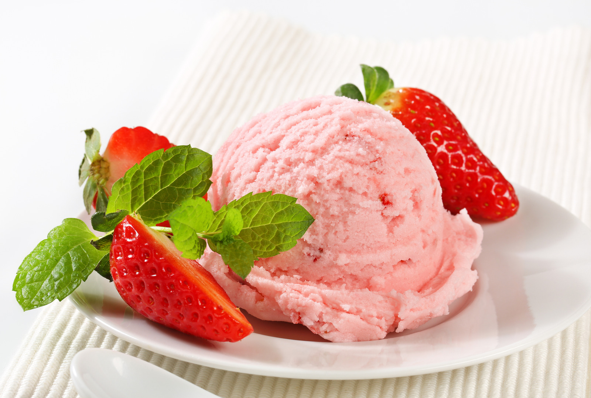
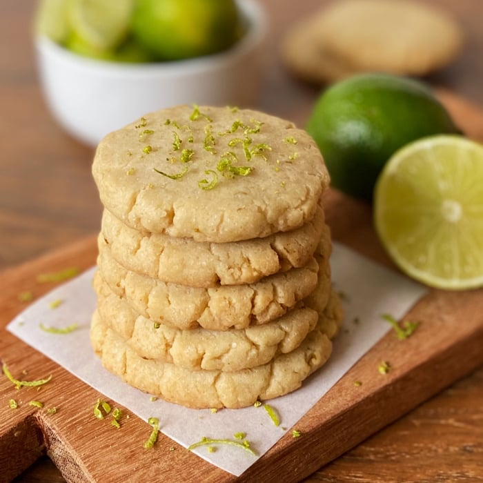

Sorvete de Morango com Banana
Ingredientes:
- 10 morangos maduros
- 2 bananas maduras
Modo de preparo:
- Prepare o creme de morango: Bater 5 morangos no liquidificador até formar um creme homogêneo.
- Prepare os morangos picados: Picar os outros 5 morangos e reservar.
- Misture as bananas: Acrescente as bananas descascadas ao creme de morango e bata no liquidificador até ficar bem misturado.
- Congele o creme: Coloque o creme em um pote com tampa e leve ao congelador.
- Tempo de congelamento: Deixe no congelador por pelo menos 2 horas antes de servir.
- Sirva: Sirva o sorvete depois de 2 horas de congelamento. Não é necessário adicionar nenhum líquido ou açúcar.
Brownie Vegano

Ingredientes:
- 1 xícara de açúcar (eu uso demerara)
- 3/4 de xícara de amido de milho
- 1 xícara de cacau em pó
- 1 xícara de amêndoas
- 2 colheres (sopa) de chia
- 4 colheres de água (para a chia)
- 1 e 1/2 xícara de água
- 1 colher (sopa) de azeite de oliva
- Castanhas a gosto (para massa e decoração)
Modo de preparo:
- Prepare a chia: Coloque a chia de molho nas 4 colheres de água por 10 minutos, até formar um gel.
- Misture os ingredientes secos: Em uma tigela, misture o açúcar, o cacau e o amido de milho.
- Adicione a chia e o azeite: Em seguida, adicione a chia hidratada e o azeite de oliva à mistura seca e mexa bem.
- Prepare as amêndoas: Bata as amêndoas com 1 e 1/2 xícara de água no liquidificador até obter uma mistura homogênea.
- Combine tudo: Adicione a mistura de amêndoas à tigela e mexa até incorporar todos os ingredientes.
- Prepare a forma: Unte um tabuleiro com azeite de oliva. Acrescente as castanhas na massa e/ou por cima para decorar.
- Asse: Asse em forno pré-aquecido a 160°C por 25 minutos.
Brigadeiro Vegano
Ingredientes (20 porções):
- 1 litro de leite de soja tradicional
- 1 xícara de açúcar cristal
- 1 colher de cacau em pó ou 2 colheres de chocolate em pó
- Granulado para decorar a gosto
Modo de preparo (Tempo total: 40min):
- Ferva o leite e o açúcar: Coloque o leite de soja e o açúcar em uma panela e leve ao fogo alto até começar a ferver.
- Caramelize: Abaixe o fogo e deixe ferver até que o leite fique com uma cor caramelizada, mexendo ocasionalmente.
- Adicione o cacau: Adicione o cacau em pó ou o chocolate em pó à mistura.
- Cozinhe: Após adicionar o cacau, mexa com frequência para evitar que grude no fundo da panela.
- Atingir o ponto: Quando a mistura começar a secar, mexa constantemente até que comece a soltar do fundo da panela.
- Resfrie e enrole: Despeje a mistura em um prato e deixe esfriar. Depois de fria, enrole os brigadeiros e passe no granulado para decorar.
Mousse de Maracujá Vegano e Sem Açúcar
Ingredientes (10 porções):
- 500 g de tofu soft
- 250 ml de suco de maracujá
- Adoçante culinário a gosto
Modo de preparo (Tempo total: 10min):
- Prepare o tofu: Com um processador ou mixer, bata o tofu até que fique bem homogêneo.
- Adicione o suco de maracujá: Junte à mistura o suco de maracujá e o adoçante culinário.
- Misture bem: Bata novamente até que fique tudo bem misturado e uniforme.
- Geladeira: Leve à geladeira por pelo menos 2 horas até que fique bem gelado.
Cookie de Limão
Ingredientes:
- 1 xícara de chá de açúcar
- 80 ml de óleo vegetal
- 2 colheres de sopa de leite vegetal
- 1/2 colher de chá de fermento
- Suco e raspas de um limão
- Farinha de trigo para enfarinhar
- Óleo para untar
Modo de preparo:
- Em uma tigela, misture o açúcar, o óleo, o leite, o suco e as raspas de limão.
- Acrescente a farinha de trigo e o fermento. Misture até formar uma massa que solte das mãos.
- Faça bolinhas e coloque em uma assadeira untada com óleo e enfarinhada com farinha de trigo.
- Coloque as bolinhas com distância de 2 dedos entre elas.
- Leve ao forno preaquecido a 180ºC por 20 minutos.
Beijinho

Ingredientes:
- 1/2 xícara de chá de leite de amêndoas
- 1 colher de sopa de farinha de trigo
- 200 ml de leite de coco
- 3/4 de xícara de chá de coco ralado seco e sem açúcar
- 3/4 de xícara de chá de açúcar demerara
- 1 pitada de sal
- 1 xícara de chá de coco ralado seco para enrolar os beijinhos
Modo de preparo:
- Em um recipiente, coloque o leite de amêndoas, adicione a farinha de trigo e misture até ficar uniforme.
- Coloque em uma panela, com o leite de coco, o coco ralado seco, o açúcar e a pitada de sal.
- Cozinhe em fogo baixo por cerca de 20 minutos ou até ficar bem firme, para conseguir modelar. Misture sempre para não queimar.
- Desligue o fogo e coloque em um prato para esfriar até conseguir modelar as bolinhas.
- Para enrolar, unte as mãos com óleo de coco ou creme vegetal de sua preferência. Passe os beijinhos no coco ralado.